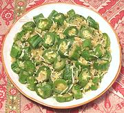

|
Snake Gourd with CoconutIndia - Kerala - Padavalanga Thoran | ||||
| Serves: Effort: Sched: DoAhead: |
4 side ** 35 min Yes |
A light gourd dish suitable as a side for both Indian and Western dishes. Texture and appearance will differ with size and shape of gourd and how it's cut. | |||
|
|
1-1/4 1/2 8 2 2 1/2 10 3 1/8 1/2 1/2 1-1/2 1/3 |
# c oz oz cl t t t t T c |
Snake Gourd (1) Coconut, grated (2) Onion Shallots Garlic Mustard seed Curry Leaves (3) Dried Chili (4) Turmeric Chili Powder (5) Salt Oil Water |
PREP (15 min)
|
isv_snake1 100406 Pachakam
©Andrew Grygus - agryg@clovegarden.com - Linking
to and non-commercial use of this page is permitted.